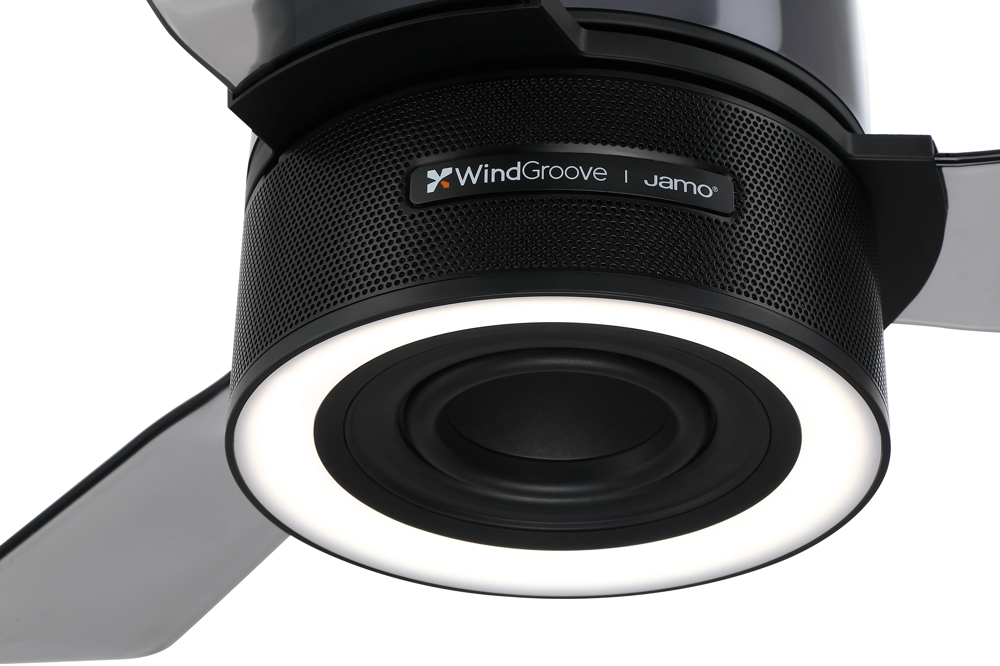

At a glance
- Yes. AirFi One has a dedicated woofer, two mid-high drivers and digital tuning, with an audio system developed with Jamo.
- A 5.25-inch woofer and passive radiators handle the bass. EQ presets offer a choice of tonal balance.
- The main trade-off is the soundstage. AirFi One sends music into the room from above; a separate stereo pair is better suited to creating a stage in front of the listener.
Yes. Good sound comes from the way the drivers, enclosure and tuning work together. WindGroove AirFi One brings that speaker design into a ceiling fan, sending music into the room from above. It can serve as an everyday music system, with a listening layout that differs from speakers placed in front of a sofa.
A 5.25-inch woofer gives bass its own driver
AirFi One has a 5.25-inch woofer rated at 50 W RMS, devoted to the lower frequencies. This is the part of the sound that gives a kick drum its weight and a bass line its body.
Bass from a compact speaker also depends on how its enclosure is designed. AirFi One’s passive radiators work with the woofer to extend the low-frequency response within the space available inside the fixture.

Tuning brings the drivers together
The two 1.5-inch mid-high drivers are rated at 15 W RMS each, bringing the system’s total to 80 W RMS. Their frequency range carries details such as the articulation of a voice, string harmonics and cymbals. How those details blend with the bass shapes the character of the music.
AirFi One’s audio system was developed with Jamo, the Danish audio brand, and uses digital signal processing (DSP) to tune the sound. Tuning shapes the balance across the frequency range: the weight of the bass, the body of the midrange and the brightness of the treble.
For everyday listening, equalizer (EQ) presets offer a choice of tonal balance. EQ changes the relative level of different frequency ranges. More bass gives drums and bass lines greater presence; changes in the treble are easier to hear in details such as cymbals and plucked strings. AirFi One offers several presets to compare with the music you play most often.
What changes when music comes from above?
AirFi One’s woofer faces down, while its two mid-high drivers face outward. Waveguides help direct sound into the room. The layout is designed to reach several listening positions, making it a useful option for music around a dining table, daily listening in the living room or a playlist shared with friends.
A stereo pair is arranged around a listening seat in front of it. The space between the left and right speakers, along with their angle, helps place a singer between them and spread instruments across the front. This sense of where the performers are is part of the soundstage.
It helps to separate soundstage from tone. Music can sound warm and full while coming from overhead. A pair placed in front of a sofa can also create a clear stage across the room. AirFi One takes the overhead approach. A separate pair is the better fit when much of the pleasure comes from hearing where each voice and instrument sits in a recording.
Choosing it as the living room’s music system
For a living room that needs both a fan and everyday music, AirFi One is worth considering as a fixed audio system. Its bass design, tuning and outward-facing layout are built for music shared around the room.
| What matters | AirFi One ceiling fan speaker | A separate stereo pair |
|---|---|---|
| Listening style | Everyday music and shared listening around the room. | A front-facing stage built around a main listening seat. |
| Sound source | Drivers grouped at the ceiling, facing down and outward. | Left and right speakers placed apart, with adjustable spacing and angles. |
| Room layout | The fan and speaker share a mounting position chosen during installation. | Placement can be adjusted around the sofa and the room’s acoustics. |
Plan the mounting point alongside the seating layout. Walls, floors and furniture reflect sound, so the same song can have a different bass balance at the sofa and dining table. Include the main activity areas when planning the installation. During a demonstration, listen from the places where people would actually sit or spend time.
AirFi One sound: common questions
How does the built-in woofer differ from a separate subwoofer?
AirFi One’s woofer handles bass as part of its music system. A separate subwoofer is devoted to the lowest frequencies and has its own enclosure and placement. A system with a dedicated subwoofer is worth prioritizing when deep movie effects or the lowest notes in music are a central part of the experience.
How should I choose an EQ preset?
Use a familiar song and compare the same passage at a similar listening level. Listen to how prominent the voice is, how easy the bass line is to follow and whether the cymbals feel too sharp. Then try a few of your usual tracks and choose the preset you enjoy most.
Can I play music with the fan and lights off?
Yes. AirFi One’s speaker, fan and lights work independently.